Informatica PowerExchange CDC对接FusionInsight¶
适用场景¶
Informatica PowerexChange CDC 10.2.0 ↔ FusionInsight HD V100R002C80SPC200 (Kafka)
环境信息¶
- Informatica PowerExchange CDC 10.2.0 Linux & Windows版本
- Informatica PowerExchange Publisher 1.2.0
- Oracle database 11g
- jdk-7u71-linux-x64.rpm
- FusionInsight HD Kafka客户端
部署方案¶
- 一台Linux服务器，部署oracle数据库，作为数据源，同时部署Informatica PWX CDC，并启用listener和logger进行日志监听，再安装PWX Publisher,将捕获到的日志数据传送到kafka的topic中。
- 一台Linux服务器，安装FusionInsight HD Kafka客户端，消费PWX Publisher传送过来的数据
- (可选)一台Windows机器，安装PWX CDC，启用listener，启动navigator图形化界面，查看PWX捕获到的数据.
数据库配置¶
>此部分配置请参考Informatica PowerExchange CDC指导文档
https://docs.informatica.com/data-integration/powerexchange-for-cdc-and-mainframe/10-2/_cdc-guide-for-linux-unix-and-windows_powerexchange-for-cdc-and-mainframe_10-2_ditamap/powerexchange_cdc_data_sources_1/oracle_cdc_with_logminer.html
-
切换至oracle用户,使用Sqlplus / as sysdba登陆Oracle源端数据库后打开Archive Log:
>建议在两次SHUTDOWN操作之前备份数据库.SHUTDOWN IMMEDIATE; STARTUP MOUNT; ALTER DATABASE ARCHIVELOG; ALTER DATABASE OPEN; SHUTDOWN IMMEDIATE: STARTUP; archive log list; -
源端数据库打开数据库级最小附加日志及force logging：
SELECT supplemental_log_data_min, force_logging FROM v$database; alter database add supplemental log data; alter database force logging; -
切换日志以使附加日志生效：
ALTER SYSTEM switch logfile;
- 拷贝Oracle Catalog 至归档日志中
EXECUTE SYS.DBMS_LOGMNR_D.BUILD(options => sys.dbms_logmnr_d.store_in_redo_logs); -
创建普通用户C##PWX,赋予创建表的权限，连接至数据库

-
创建测试表,向表中插入一些数据.

Informatica PWX CDC & PWX Publisher 安装配置¶
在Linux上安装Informatica PWX CDC¶
- 获取安装包
pwx1020_linux_em64t.tar. - 解压安装包之后，执行
./install.sh，根据提示设置安装路径即可,这里安装目录为/opt/PowerExchange/10.2.0.
配置环境变量¶
-
打开配置文件
vi ~/.bash_profile添加以下配置export PWX_CONFIG=/opt/PowerExchange10.2.0/dbmover.cfg export PWX_HOME=/opt/PowerExchange10.2.0 PATH=$PATH:$HOME/bin:/usr/lib/oracle/12.1/client64/bin:/opt/PowerExchange10.2.0 export LD_LIBRARY_PATH=$ORACLE_HOME/lib:/opt/PowerExchange10.2.0 export NLS_LANG=AMERICAN_AMERICA.ZHS16GBK* 执行source ~/.bash_profile,source环境变量 * 执行dtlinfo,检查安装以及配置是否成功
配置dbmover.cfg与pwxccl.cfg文件¶
-
修改PWX安装目录下的dbmover.cfg文件如下
- nodeln 为自定义的监听节点名

- ORACLEID中的第二个ORCL，为被监听的数据库名称，此处为默认的ORCL

- CAPT_PATH指定了CDC的控制文件路径，需提前创建好相应目录

- 指定SVCNODE和CMDNODE名称
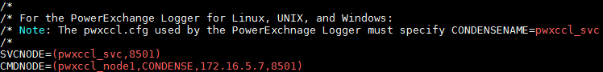
-
修改pwxccl.cfg文件如下
- CONDENSENAME需要和dbmover.cfg文件中SVCNODE配置保持一致
- DBID 为数据库名称
- CAPTURE_NODE 为进行捕获节点名称
- CAPTURE_NODE_UID 为登录数据库的用户名
-
CAPTURE_NODE_PWD 为对应数据库用户密码

-
启动listener以及logger
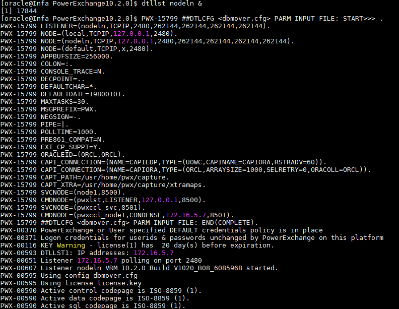

PWX CDC 捕获ORACLE日志数据¶
### 在Windows上安装Informatica PWX CDC
Windows上安装Informatica PWX CDC主要是可以使用Navigator界面,查看捕获到的日志数据.
-
获取安装包之后双击进行安装,修改系统环境变量PATH,添加PWX安装目录.
 * 添加环境变量PWX_CONFIG,设置为PWX安装目录下的dbmover.cfg文件
* 添加环境变量PWX_CONFIG,设置为PWX安装目录下的dbmover.cfg文件 * 配置dbmover.cfg文件
- 配置listener名称,添加服务端listener配置信息
* 配置dbmover.cfg文件
- 配置listener名称,添加服务端listener配置信息 - 指定监听数据库名称
- 指定监听数据库名称 - 设置控制文件路径
- 设置控制文件路径 * 启动listener
* 启动listener * 从开始菜单栏启动Navigator
* 从开始菜单栏启动Navigator * 在菜单栏资源->数据捕获->注册组，右键新建注册组，填写信息如下
- 名称：自定义
- 位置：Linux服务端监听节点名称
- 类型：ORACLE
- 用户ID和密码：数据库用户密码
- 集合标志符：数据库名ORCL
* 在菜单栏资源->数据捕获->注册组，右键新建注册组，填写信息如下
- 名称：自定义
- 位置：Linux服务端监听节点名称
- 类型：ORACLE
- 用户ID和密码：数据库用户密码
- 集合标志符：数据库名ORCL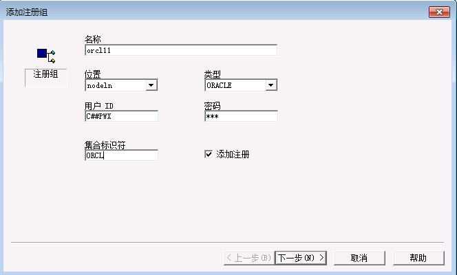
-
点击下一步
- 名称：自定义
- 架构：schema名称，即用户名
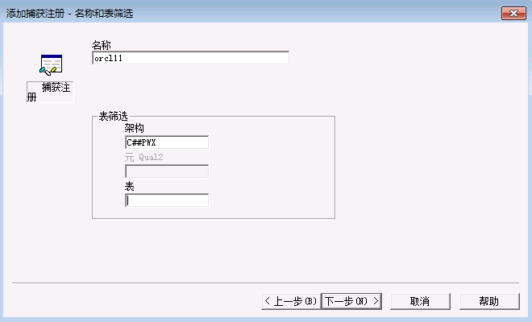
-
点击下一步，会看到刚才创建的test表，双击表名，被选入右侧，选择所有列
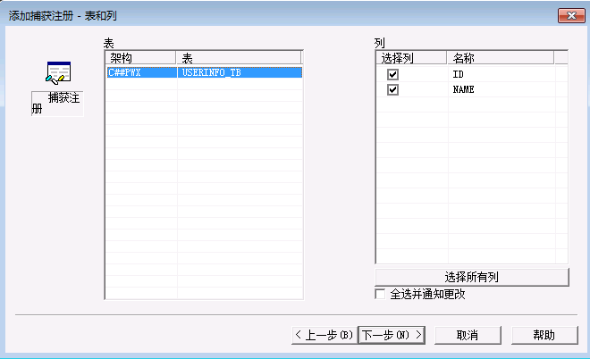
-
点击下一步，修改状态为
活动，勾选立即执行DDL,点击完成
-
在提取组，双击刚才创建的orcl12,进入提取组界面，右键，添加提取自定义，填写映射名称以及表名称
 * 点击下一步，可以看到刚才创建的注册
* 点击下一步，可以看到刚才创建的注册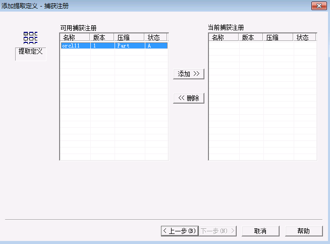
点击添加，完成

-
点击菜单栏图表，执行行测试,可看到捕获到的数据库日志记录


使用PWX CDC publisher对接Kafka¶
### 修改kafka配置文件 * 修改producer.properties文件，添加如下配置
sasl.mechanism = GSSAPI
key.serializer = org.apache.kafka.common.serialization.StringSerializer
value.serializer = org.apache.kafka.common.serialization.ByteArraySerializer
key.deserializer = org.apache.kafka.common.serialization.StringDeserializer
value.deserializer = org.apache.kafka.common.serialization.StringDeserializer

- 创建一个kafka topic,
pwxtopiccd /opt/hadoopclient/Kafka/kafka/bin kafka-topics.sh --create --zookeeper 172.16.4.21:24002/kafka --partitions 2 --replication-factor 2 --topic pwxtopic
### 安装配置Informatica PWX Publisher
* 获取安装包pwxcdcpub120_linux_x64.tar.gz,以root用户身份解压至安装目录即可
- 以root用户登录节点，在~/.bash_profile文件中添加以下配置
export PWXPUB_HOME=/opt/pwxcdcpub120_linux_x64 export KAFKA_CLIENT_LIBS=/opt/hadoopclient/Kafka/kafka/libs export PWX_LICENSE=/opt/pwx1020.key - 执行以下命令，source环境变量,进行kerberos认证
source ~/.bash_profile source /opt/hadoopclien/bigdata_env kinit developuser -
将安装目录samples下的配置文件复制到instanceA/config目录下，并修改文件内容 > 配置PWX Publisher可参考Informatica 官方文档 https://docs.informatica.com/data-integration/powerexchange-cdc-publisher/1-1/user-guide/configuring-powerexchange-cdc-publisher.html
- cdcPublisherAvro.cfg文件配置如下
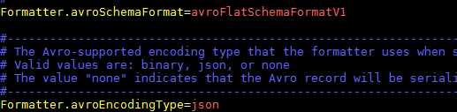 - cdcPublisherCommon.cfg文件中指定端口
 - cdcPublisherKafka.cfg文件中指定kafka topic名称以及properties文件路径
- cdcPublisherKafka.cfg文件中指定kafka topic名称以及properties文件路径 - cdcPowerExchange.cfg文件中配置如下
* Extract.pwxCapiConnectionName为在dbmover.cfg中CAPI_CONNECTION配置的name
* Extract.pwxExtractionMapSchemaName 为pwx 捕获映射中的schema名称，通常格式为
- cdcPowerExchange.cfg文件中配置如下
* Extract.pwxCapiConnectionName为在dbmover.cfg中CAPI_CONNECTION配置的name
* Extract.pwxExtractionMapSchemaName 为pwx 捕获映射中的schema名称，通常格式为unninstance或者dnninstance，这里为u8orcl* Extract.pwxNodeLocation 配置为pwx节点名称 * Extract.pwxNodeUserId，Extract.pwxNodePwd为对应数据库用户密码 * Extract.pwxXmapUserId为访问pwx提取映射的用户名密码
 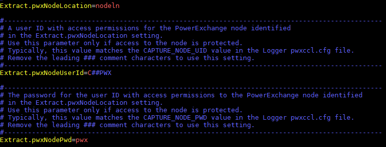
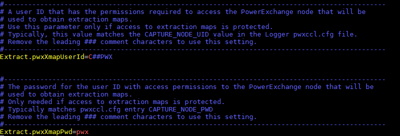
* 修改安装路径bin目录下的PwxCDCPublisher.sh启动脚本文件,在以下位置加入一行
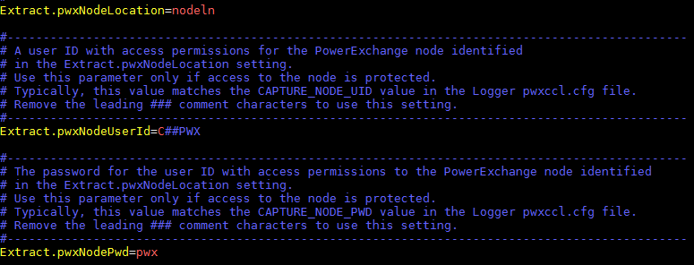
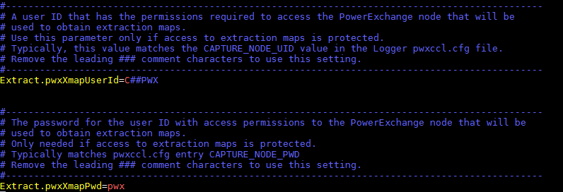
* 修改安装路径bin目录下的PwxCDCPublisher.sh启动脚本文件,在以下位置加入一行RUN="$RUN -Djava.security.auth.login.config=/opt/hadoopclient/Kafka/kafka/config/jaas.conf" * 启动pwx CDC Publisher,在bin目录下执行
* 启动pwx CDC Publisher,在bin目录下执行sh PwxCDCPublisher.sh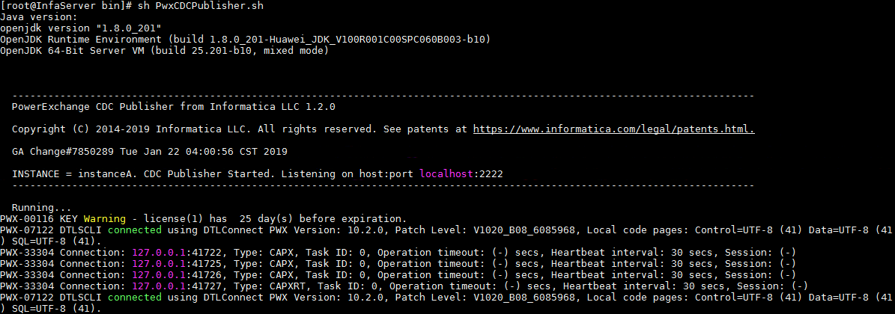
启动kafka consumer，查看消费到的数据¶
- 在FusionInsight HD Kafka 客户端,执行以下命令，启动consumer
source /opt/hadoopclient/bigdata_env kinit developuser cd /opt/hadoopclient/Kafka/kafka/bin ./kafka-console-consumer.sh --bootstrapserver 172.16.4.21:21007,172.16.4.22:21007,172.16.4.23:21007 --topic pwxtopic --new-consumer --consumer.config ../config/consumer.properties -
在oracle数据源中执行insert操作,在kafka中可以看到数据捕获如下


-
在oracle数据源中执行update操作,在kafka中可以看到数据捕获如下
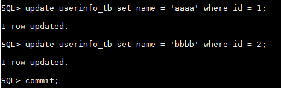

-
在oracle数据源中执行delete操作,在kafka中可以看到数据捕获如下

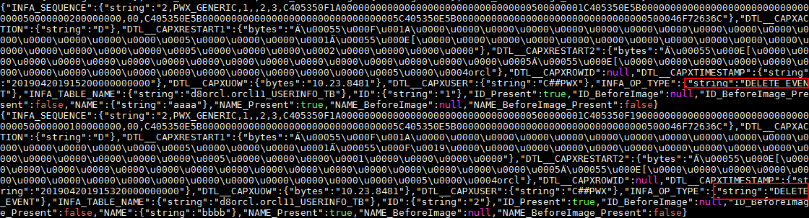
Q&A¶
1.若启动pwxccl报错如下
 A:检查在oracle中是否执行过
A:检查在oracle中是否执行过
exec SYS.DBMS_LOGMNR_D.BUILD(options => sys.dbms_logmnr_d.store_in_redo_logs);
grant sysdba to C##PWX